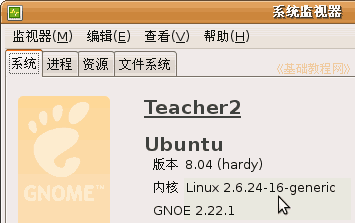
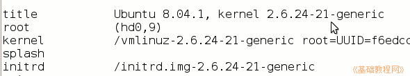
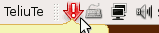
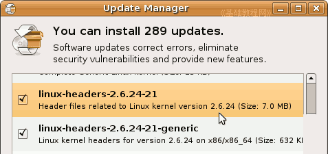
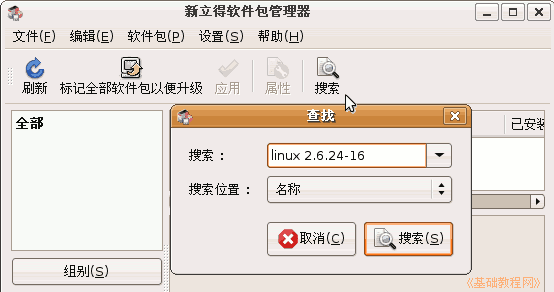
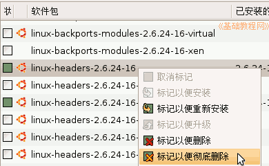
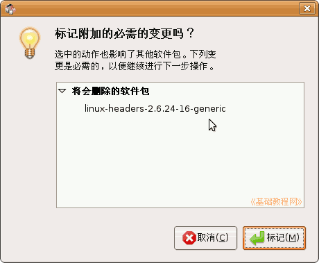
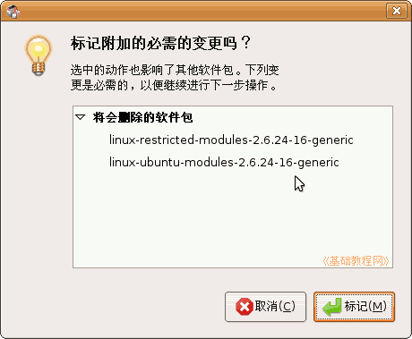
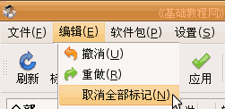

电脑操作基础
作者：TeliuTe 来源：基础教程网
十七、内核升级和删除 返回目录 下一课内核是操作系统中的核心，主要负责把用户的操作传递给计算机各个硬件，下面我们来看一个练习；
1、升级内核
1）安装Ubuntu时安装了一个操作系统内核，如8.04的内核版本是2.6.24.16；
2）查看内核的方法是，点菜单“系统－系统监视器－系统”，可以查看系统的内核版本；

3）还可以查看menu.lst的第一个启动项，这是当前加载的内核版本，一般数字是最大的，下面可能还有较小的数字，这是旧的内核；

2、升级内核
1）当软件库里有新的内核时，在上边面板提示区域，会给出一个升级提示图标，
;
在这个图标上单击左键，就进入更新管理器，点右下角的“安装更新”即可；

2）内核升级后，/boot/grub里的启动配置文件menu.lst，也会自动更新，
如果你是在WinXP里用grldr来引导Ubuntu，则还要自己把这个文件复制到C:盘的根目录下；
3、删除旧内核
1）由于启动只需要一个内核，新内核使用一段时间，没有什么问题，可以删除其他不用的旧内核；
2）点菜单“系统－系统管理－新立得软件包管理器”，输入密码后进入；
3）以2.6.24-16版本的内核为例，内核文 件里包括：linux-headers-2.6.24-16、linux-headers-2.6.24-16-generic、linux-image -2.6.24-16-generic、linux-restricted-modules-2.6.24-16-generic、linux-ubuntu-modules-2.6.24-16-generic；
4）在新立得中，点工具栏上的“搜索”按钮，在出来的搜索框中输入 linux 2.6.24-16 ，注意linux后面有一个空格，
然后点下面的搜索位置，选“名称”，点“搜索”按钮开始搜索；

5）在出来的搜索结果中，找到“linux-headers-2.6.24-16”，瞄准点右键，选“标记以便彻底删除“，
提示同时也会删除另外一个headers文件，点“标记”，这两个软件包变成红色；
 
6）往下继续找到“linux-image-2.6.24-16-generic”，同样点右键选“标记以便彻底删除”，
提示也会删除其他几个文件，点“标记”；

7）再检查一下要删除的确实是旧内核，如果错了，点菜单“编辑－取消所有标记”，重新标记，
如果检查无误，点工具栏上的“应用”按钮，删除旧内核；

8）删除旧内核，系统也会自动更新/boot/grub里的配置文件menu.lst；
本节学习了在Ubuntu中升级和删除旧内核的基本操作，如果你成功地完成了练习，请继续学习下一课内容；本教程由86团学校TeliuTe制作|著作权所有，商业用途请与作者联系
基础教程网：http://teliute.org/
美丽的校园……
转载和引用本站内容，请保留版权信息和本站链接。